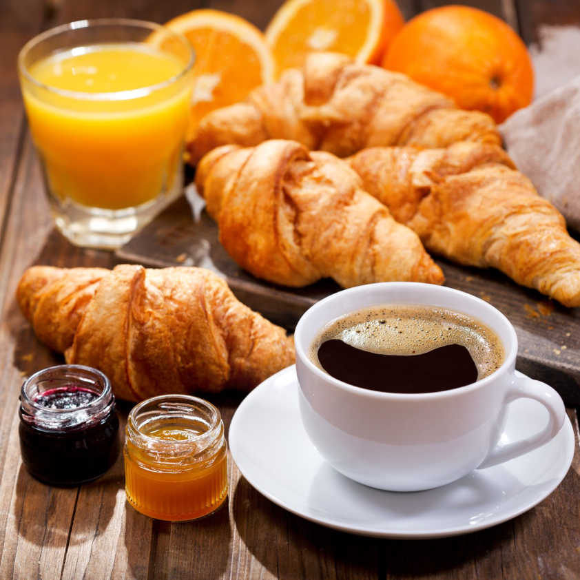
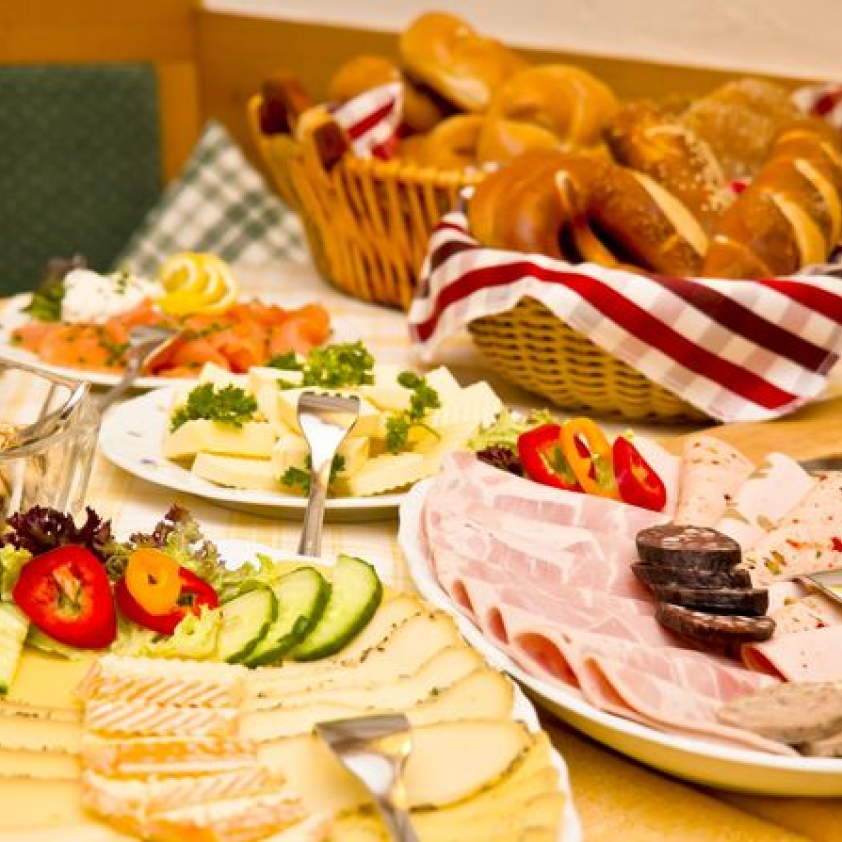
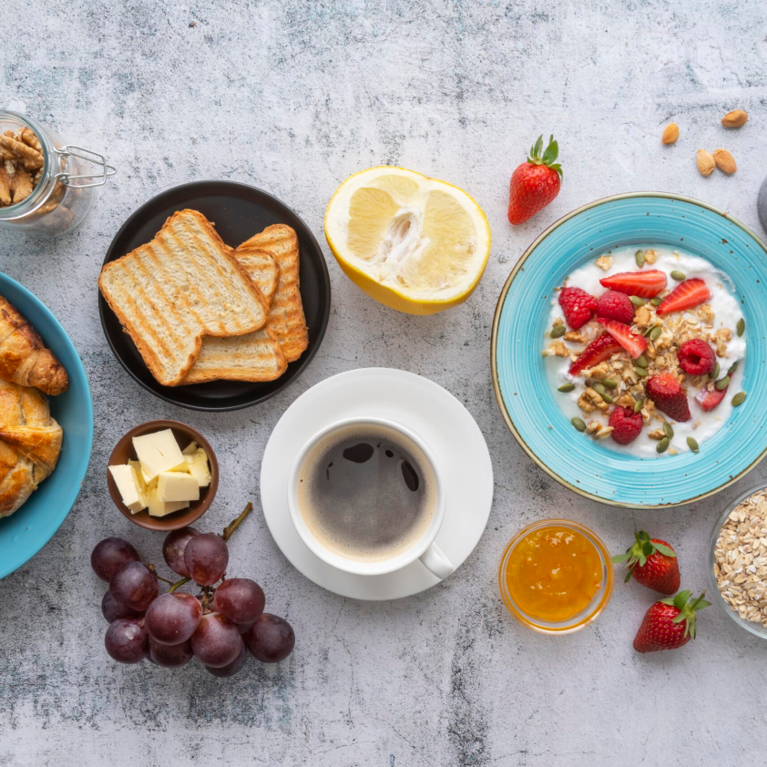
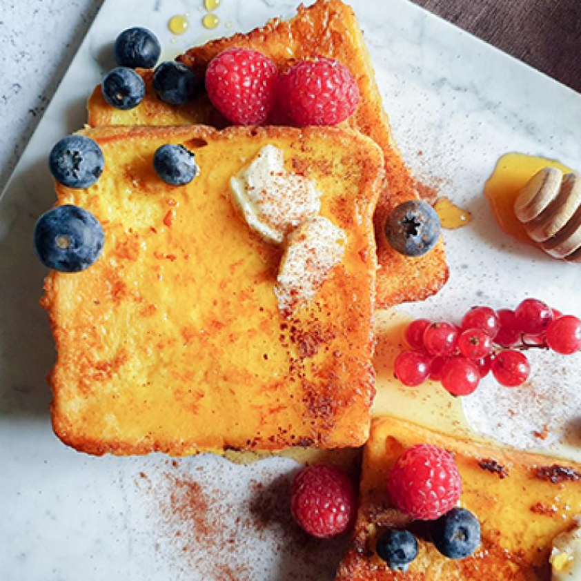
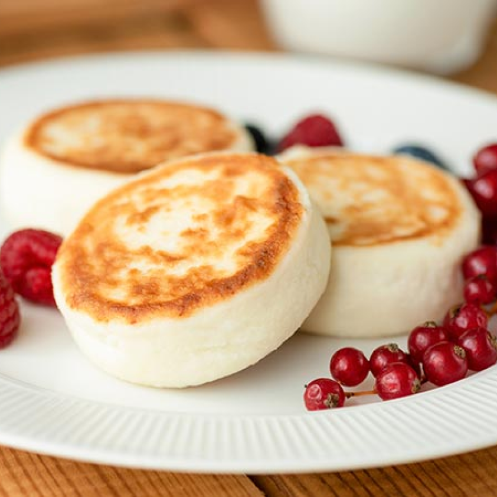
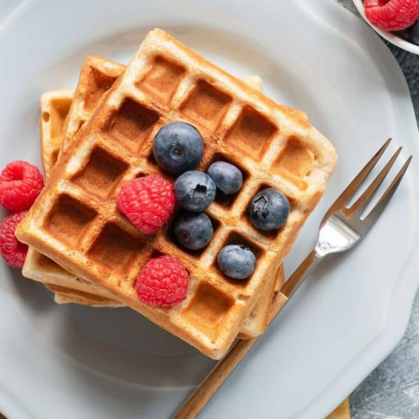

LA COLAZIONE IN ITALIA
se fatta al bar, si riassume in un caffè (o in un cappuccino) e in un cornetto, che sia semplice o ripieno. A casa, invece, non possono mancare latte e biscotti, spremuta d’arancia e fette biscottate ricoperte da burro o marmellata.

LA COLAZIONE IN GERMANIA
è composta da pane, affettati, formaggio, uova, caffè o tè.Normalmente si offrono diversi tipi di pane, oltre che a muesli, frutta secca e cereali.

LA COLAZIONE IN GRECIA
è composta dall’insostituibile yogurt greco denso e cremosocon miele e frutta secca, accompagnato di solito da una tazza di caffè, succo d’arancia e croissant

LA COLAZIONE IN FRANCIA
si esegue con caffé, té, cioccolata calda o un succo di frutta. Lo accompagnano generalmente con pane e burro, croissant o brioche alla marmellata di ogni genere.

LA COLAZIONE IN UCRAINA
consiste in un piatto a base di syrniki, pancake fritti di fiocchi di latte a uova e farina; sono tradizionalmente dolci, spesso spolverati con zucchero a velo e serviti con marmellata e conserve di frutta.
